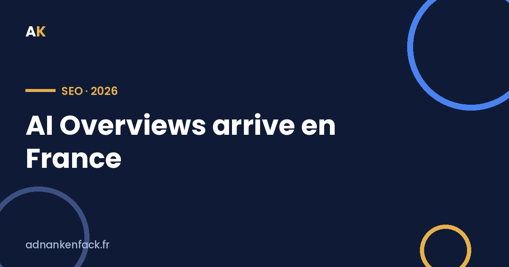

Depuis juillet 2026, Google affiche ses résumés générés par IA directement en haut des résultats de recherche français. Si tu comptes sur Google pour ramener des clients, c'est le changement le plus important depuis des années. On décortique, sans catastrophisme et sans jargon.

Tu tapes une question sur Google, et avant même les résultats habituels, un résumé rédigé par l'IA te répond directement, en piochant dans plusieurs sites. C'est ça, l'AI Overview (ou « Aperçu IA » en français).
Concrètement : l'internaute a souvent sa réponse sans jamais cliquer sur un site. Et devine qui n'a plus la visite ? Toi, si ton contenu servait à répondre à cette question.
La France était le dernier grand marché épargné, à cause du bras de fer sur les droits voisins avec la presse. C'est fini : le déploiement a commencé le 22 juillet 2026.
Autant te le dire franchement : ce n'est pas neutre.
Sur les recherches informationnelles (« comment faire… », « c'est quoi… »), la chute de trafic peut atteindre près de 47%. Autrement dit : être n°1 sur Google ne suffit plus à garantir des visites.
Tout n'est pas noir, loin de là. Deux choses à retenir :
1. Toutes les recherches ne sont pas touchées. Les requêtes transactionnelles (« acheter X », « réserver Y près de chez moi ») et de navigation ne déclenchent quasiment jamais d'AI Overview. Si ton business vise des gens prêts à passer à l'action, tu es beaucoup moins exposé.
| Type de recherche | Exemple | Déclenche un AI Overview ? |
|---|---|---|
| Informationnelle | « comment faire du SEO » | Souvent |
| Transactionnelle | « agence Meta Ads Lyon » | Rarement |
| Navigation | « adnankenfack.fr » | Quasi jamais |
2. Être cité dans le résumé IA, c'est un jackpot. Les sites cités à l'intérieur de l'AI Overview récupèrent en moyenne 35% de clics en plus que ceux qui n'y apparaissent pas. La visibilité ne disparaît pas — elle se déplace.
Voilà le cœur du sujet. Avant, l'objectif du SEO était simple : monter en 1re position. Aujourd'hui, un nouvel objectif s'ajoute : être la source que l'IA cite dans sa réponse.
C'est ce qu'on appelle le GEO (Generative Engine Optimization) — l'optimisation pensée pour les moteurs de réponse et les IA comme les AI Overviews, ChatGPT ou Perplexity. Ce n'est pas la mort du SEO, c'est son évolution.
Le SEO ne meurt pas, il change d'objectif : ne cherche plus seulement à être classé, cherche à être cité. Les sites cités gagnent 35% de clics en plus — la visibilité se déplace, elle ne disparaît pas.
Les AI Overviews ne tuent pas le SEO — ils le rendent plus exigeant. Le contenu creux publié « pour Google » va disparaître des radars. Le contenu clair, utile et expert, lui, va être cité et gagner en visibilité.
Si tu gères ton acquisition seul, c'est un changement de plus à digérer, en même temps que Meta et Google Ads qui basculent vers l'IA de leur côté. C'est précisément là qu'avoir quelqu'un qui suit ces évolutions pour toi devient rentable.
Je regarde ton site gratuitement et je te dis où tu risques de perdre du trafic — et comment te faire citer.
Réserver un audit gratuit